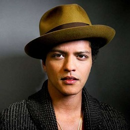

Integrantes

Peter Gene Hernandez
Peter Gene Hernandez (Honolulu, Hawái, 8 de octubre de 1985) es un cantante, compositor, productor musical y coreógrafo estadounidense, conocido como Bruno Mars.
Philip Lawrence
Philip Martin Lawrence II (nacido el 17 de julio de 1980) es un compositor, productor discográfico, emprendedor y actor de doblaje estadounidense mejor conocido por su trabajo con el equipo de composición y producción The Smeezingtons
, junto a Bruno Mars.
Phredley Brown
Phredley Brown siempre había soñado en grande con la música. Pero no tenía idea de lo que le aguardaba cuando partió hacia Los Ángeles. El músico criado en Lathrup Village y ex alumno de Roeper School fue un pianista que se abrió camino
en bandas de Detroit y conciertos en bares antes de partir hacia la costa oeste en 2009 en busca de un descanso.
Eric Hernandez
Eric Hernandez nació en Brooklyn, Nueva York. Es hijo del nativo de Brooklyn Pete Hernandez, quien fue el percusionista de Love & Money y Cecilio & Kapono. Eric comenzó a tocar la batería a la tierna edad de 4 años y a tocar profesionalmente
a la edad de 10 en Hawaii.